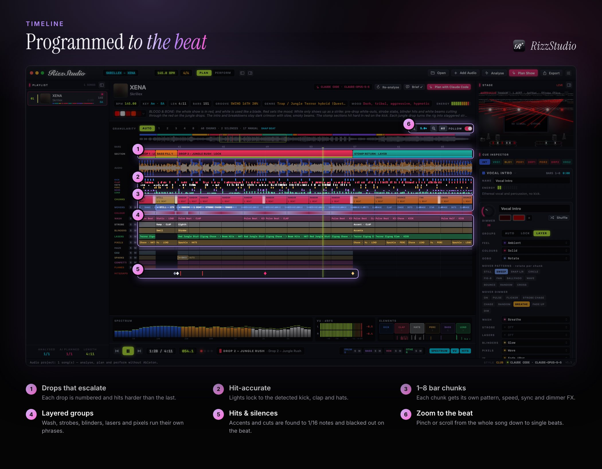

Programming a light show by hand takes hours per song: placing cues, building chases, timing strobes to snare rolls and lining blackouts up with drops. RizzStudio is an AI light show generator for macOS that does the programming for you. Give it your music and it gives you back a complete, beat-accurate DMX show.

How an AI light show is generated
RizzStudio doesn't map volume to brightness the way a basic sound-to-light mode does. It works through each song in three stages:
- Analysis. Tempo, key, sections and energy are measured, and the track is split into percussive and tonal parts so every kick, clap, hat, percussion hit, bassline note and lead is detected. Silences and cuts are found down to 1/16 notes, and swing is measured bar by bar.
- AI planning. An AI lighting designer, running in your local Claude Code or Codex CLI, labels each section (intro, build, pre-drop, drop, breakdown…) and writes a cue for it: the feel, mover patterns, gobos, colour mode, wash, strobes, lasers, pixels, effects and accent hits. It sees beat-level detail around every change, so cues land on the musical moment you'd pick by ear.
- Granular programming. Every section is split into 1, 2, 4 or 8-bar chunks, each with its own pattern, speed, sync (unison, spread, mirror, alternate), dimmer FX and colours. Aggressive passages get fast unison snaps and shaking gobos, ambient passages get slow breathing washes, and builds accelerate into the drop.

What makes the lights feel musical
Drops that escalate
Drops are numbered (Drop 1, Drop 2…) and each one is programmed bigger: more energy, more fixtures, harder accents. That's how a human lighting designer paces a set.
The pre-drop moment
The 1–2 bar moment right before a drop, whether a drum roll, an impact or a silent gap, is detected separately from the riser and lit as its own moment. It might be a strobe roll that follows the snare, a white impact, or total darkness with a blackout on the last beat.
Lights that follow instruments
Each light group follows a part that is actually playing. Washes pump on the kick, strobes fire on claps (so a snare roll speeds up the strobe), pixels run on the hats and movers ride the lead. With optional stem separation (Demucs on the Apple-silicon GPU), detection gets even cleaner.
Your direction, your references
Write a brief for any song, such as "dark, red and white only, save the lasers for the last drop", and add reference links. With Claude Code, RizzStudio watches the reference videos and borrows their palette, fixture use and pacing.
Refine anything by hand
The AI does the first 95%, and the timeline lets you finish it. Rename sections, lock or layer light groups, program individual lane blocks, or drag across a range and ask the AI for a specific cue, like "a white strobe hit on this snare pickup". Solo, mute and a master blackout cover live tweaks.
From generated show to real lights
The finished show plays in a realistic 3D stage preview and exports into Ableton Live as DMX-over-MIDI, so Ableton drives your rig through the bundled TouchDesigner receiver to Art-Net, sACN or DMX. You can also render it to an MP4 to show promoters what your set will look like.
Frequently asked questions
How is an AI light show different from sound-to-light?
Sound-to-light reacts to volume in real time. RizzStudio's AI light show is designed in advance from the structure of each song, including sections, drops, pre-drops, silences and individual instruments, so cues anticipate the music instead of lagging behind it.
Which AI does RizzStudio use?
Your local Claude Code or Codex CLI. You pick the engine and effort level in Settings. There's a timeout, cancel button and fallback chain, so planning never hangs.
Can I edit the AI's light show?
Yes. Every cue, section and lane block can be edited on the timeline, and you can select any range and ask the AI for a specific cue there.